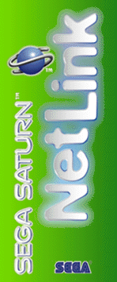
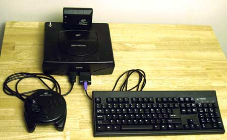
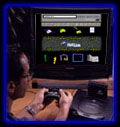
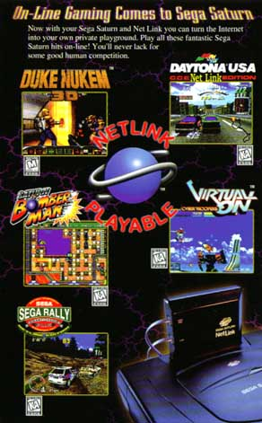
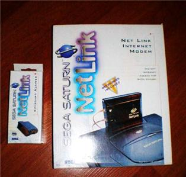

Saturn - Net Link

Tem
gente que nem desconfia, mas houve dias em que era possível
acesar a internet em simples video games de 16 e 32 bits. A Sega foi
pioneirissima nisso, começou com o Mega Drive no Japão,
mas logo depois a idéia saiu da terra dos homi de oio puxado,
foi aperfeiçoada, e pousou no mundo ocidental.
Nada mais natural que o processo de acesso à internet através do Mega Drive, recebesse um belo upgrade em sua versão Saturn, e foi aí que nasceu o Net Link.
Por se conectar à entrada de cartuchos do Saturn, possibilitava ao jogador disputar partidas on-line com outros jogadores em partidas de Daytona, Sega Rally e outros games. Simplesmente genial, a Sega havia assim trazido com sucesso a possibilidade de partidas multiplayer pela internet tambem para o Saturn, e isso com jogos que faziam o maior sucesso na época. Então, por fim, o que era apenas um privilegio dos portentos possuidores de poderosos PCs, passou a ser usufruido por muito moleque dono de Saturn. Teve um tempo em que a Sega disponibilizou vários desses Net Links para aluguel na Blockbuster (uma cadeia de locadoras de filmes que mais fazia sucesso nos EUA), claro que isso foi feito para incentivar e divulgar o Net Link.
No Brasil, o aparelho teve sua versão tupiniquim produzida e suportada pela Tec Toy. Tá certo, custava um rim e metade do fígado, mas valia a pena e era a coisa mais chiquetosa que se podia ter em casa. O acesso à internet era oferecido pela propria Tec Toy para os felizes habitantes do Rio e Sampa, o resto do Brasil tinha que pagar mais caro para usufruir do serviço pois para o modem do Net Link ligar para os servidores em Sampa ou Rio, obviamente rolava um interubano que lascava qualquer conta de telefone...

Olha aé o Net Link, adaptador para teclado e o Saturnão
De todo modo, para quem morasse no Rio ou Sampa, era só lucro. O browser do Saturn possuia recursos bem interessantes, sendo que o principal era uma tecnologia que possibilitava ler e ver imagens da net perfeitamente na TV, sem sombreado ou distorções gritantes. Tinha zoom, suportava as principais tecnologias da Web na época, possuia a função bookmark (Favoritos), sempre carregava primeiro os textos para só depois carregar as pesadas imagens (acredite, quem já usou modem sabe como isso é vantajoso), tinha um teclado virtual, teclas de atalho... enfim, era uma coisa de dar inveja ao Internet Explorer e o Netscape.
Havia a possibilidade de se conectar um teclado de computador no Saturn através de um adaptador tambem vendido pela Tec Toy, e tambem tinha um mouse oficial da Sega para ser utilizado no console.
Enifim, o video game com o Net Link era uma maravilha só, mas como tem tudo é algodão doce, um dia chegou o seu fim. Logo mais depois dele, o acesso à internet pelo video game continuou no pioneiro Dreamcast, e só depois do Dreamcast, é que a concorrência resolveu investir de verdade nessa aréa.
É por essas e outras que a Sega é tão adorada por aí. Confira mais algumas imagens abaixo:

Antiiiiiiga imagem do site da Tec Toy, onde ela apresentava o Net Link.
Notem na tela a aparência do browser do aparelho.

Propaganda do Net Link em uma revista estrangeira, mostrando alguns games compativeis.

Caixinha do Net link e adaptador de teclado americanos.
Acesse o Trombone e comente sobre essa matéria!


Que tal acessar a sua conta do banco, com todo o conforto e comodidade de sua casa? Para isso, o pai de familia iria precisar do Telebradesco, um cartucho especial fabricado com exclusividade pela Tec Toy para o Bradesco; e tambem iria precisar pegar emprestado o Mega Drive do muleque para acessar...